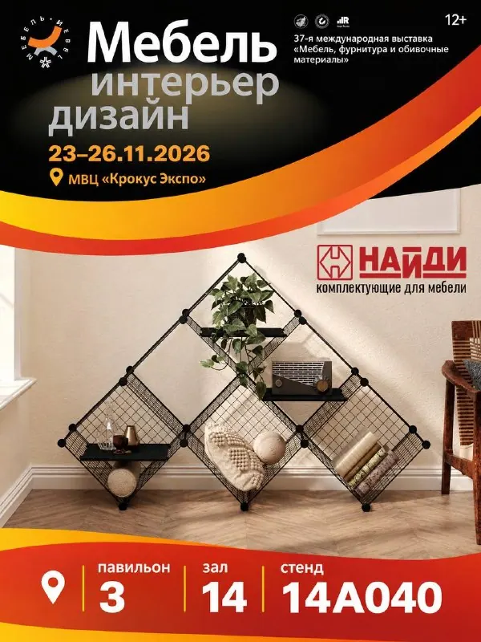
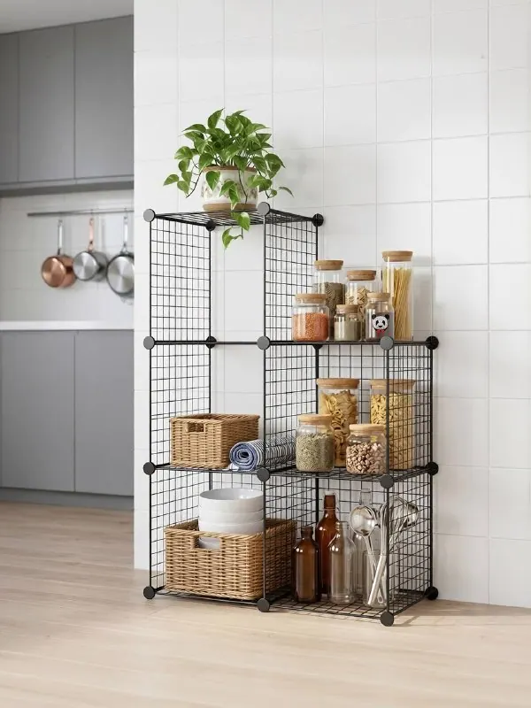
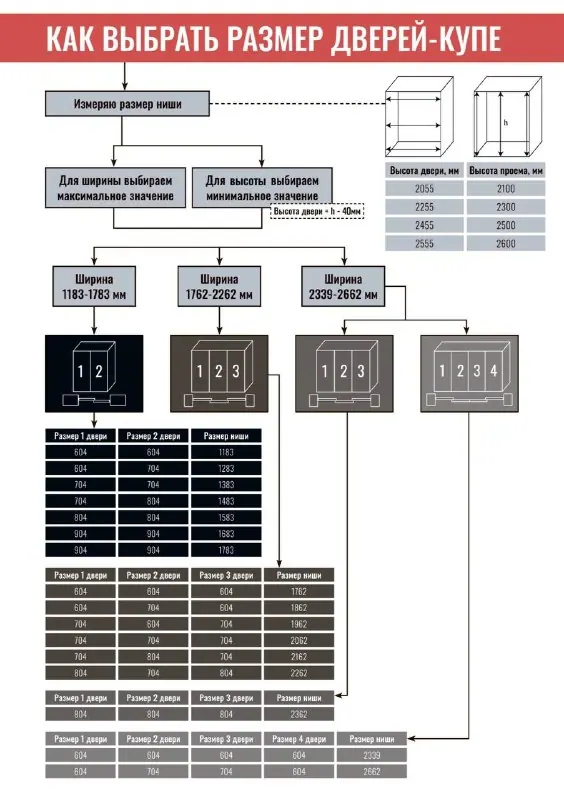

Всё готово! ✅ Команда на месте, стенд почти собран. Завтра встречаемся на 37-ой Международной выставке «Мебель, фурнитура и обивочные материалы». Приходите поддержать и посмотреть на новинки ❤️
НАЙДИ фурнитураО выставке

МЕБЕЛЬ-2026 · РОССИЯ · Стенд 14A040
Дата среза карточки: 16.11.2026 11:21
Посмотреть официальную схему →
Мебельная фурнитура - купить недорого с доставкой по РФ. Комплектующие для мебели оптом и в розницу от производителя. Решения для шкафов-купе, модульные системы мебели, системы стеллажей и хранения, сетчатая продукция и алюминиевые системы на сайте мебельной фурнитуры и комплектующих naidy.com
Официальный каталог подтверждает название компании, страну и стенд. Сайт и открытые контакты добавлены только при наличии строки в официальном путеводителе и успешной проверке сайта. Отсутствие контакта в карточке не означает, что у компании его нет.

Всё готово! ✅ Команда на месте, стенд почти собран. Завтра встречаемся на 37-ой Международной выставке «Мебель, фурнитура и обивочные материалы». Приходите поддержать и посмотреть на новинки ❤️

Нашему директору Козловскому Дмитрию Борисовичу - 50 лет! 50 лет — 50 цитат! 😎 Собрали самые яркие высказывания нашего директора в один необычный подарок. Дмитрий Борисович , спасибо за опыт, мудрость и бесценные уроки! С юбилеем!
 Альбом · 2
Альбом · 2
Габариты корзин и требования к нише ✅ При выборе выдвижной корзины важно учитывать не только её собственные размеры, но и параметры пространства для монтажа. В специальной таблице указано 👉🏼 — ширина и глубина корзин с направляющими; — минимальная и максимальная ширина ниши; — минимальная допустимая…
 Видео в Telegram ↗
Видео в Telegram ↗
Осенний вечер, выходные, камин или баня — приятный сценарий 🏠 ❤️ Металлическая переноска для дров с ручкой упрощает один из этапов: дрова не нужно носить в руках. А вы в чем переносите дрова?

Дорогие друзья! Уже через месяц стартует 37-я Международная выставка «Мебель, фурнитура и обивочные материалы.» Будем рады вас видеть на нашем стенде 👉🏼 г. Москва, МВЦ «Крокус ЭКСПО» , павильон 3, зал 14, стенд 14А040

Альбом · 6Делимся наблюдением: стеллажные системы перестали быть просто «мебелью для склада». Сегодня это полноценный инструмент организации пространства. ➡️ Наша система СМС — это яркий пример того, как функциональность превращается в гибкость. Это не просто стеллаж. Это каркас вашего порядка. Независимо от того, нужно ли вам организовать…

📏 Как правильно выбрать двери-купе? Смотрим на картинку! При замере ниши важно точно измерить ширину и высоту проема. Ширина двери считается с учетом перехлеста — минимум 2,5 см, иначе будут щели. Если высота проема чуть больше, чем нужно, — не беда: на верхнюю часть можно…
 Альбом · 4
Альбом · 4
Порошковая покраска — это броня для металла 🛡️ На фото — результат. Такие изделия не боятся ни дождя, ни солнца, ни влажного воздуха. Практичное решение для дома, кухни, ванной и улицы — без ущерба для эстетики ✨
 Альбом · 5
Альбом · 5
Универсальность — это когда одна вещь работает за троих. Такие предметы не пылятся на полке, потому что их применение возможно буквально в каждом уголке дома. Проверено бытом: чем проще функция, тем чаще мы к ней обращаемся ❤️ 🏡
Источники: